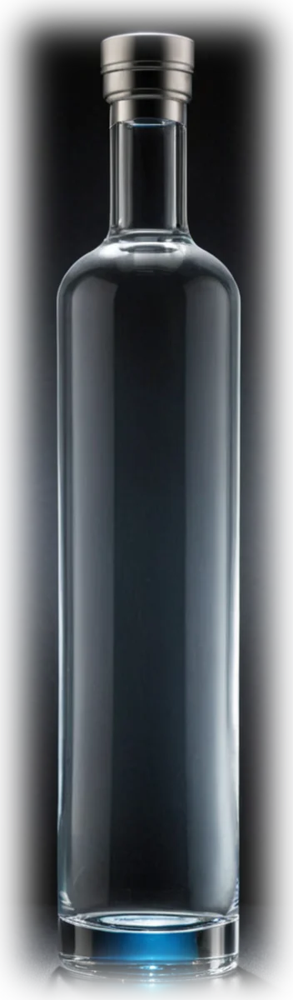
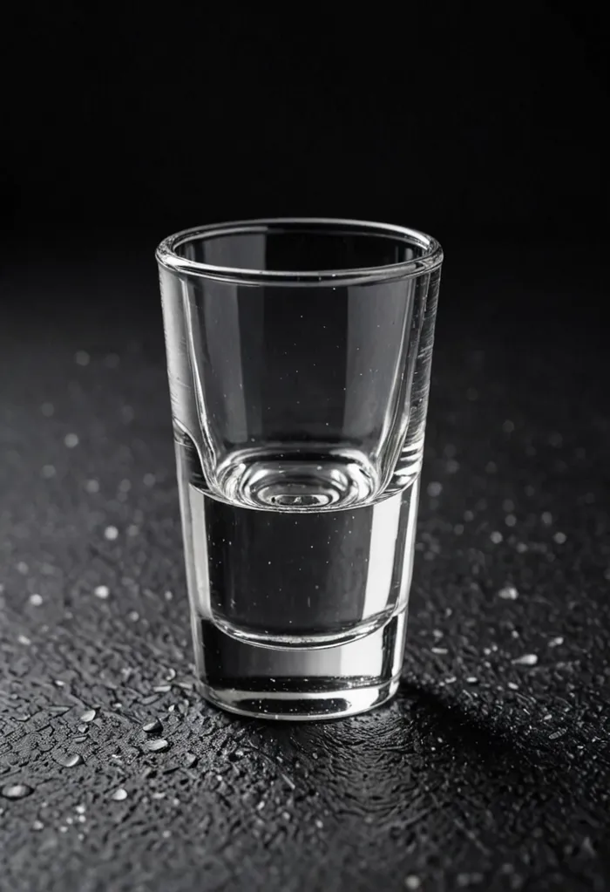

01
Nose
Almost silent at first. Cold grain, a trace of white pepper, then a faint sweetness like wet stone.
By entering you agree to our Terms of Use and Privacy Policy.
Welcome
By entering you agree to our Terms of Use and Privacy Policy.
Limited winter release
Free shipping on 2+ bottles
Nine times distilled.
Nordic winter wheat vodka
Winter wheat from the sixtieth parallel, distilled nine times, then filtered at nine degrees below zero through glacial basalt. Nothing added, nothing left behind.
Must be 21 years of age or older to purchase


The Winter Wheat
Nine Below is distilled from winter wheat grown above the sixtieth parallel, where the cold slows the grain and concentrates the starch.
It runs through the column nine times, then rests against glacial basalt at nine degrees below zero. Cold filtration strips the harshness that carbon alone leaves behind. No sugar, no glycerol, no citrus masking.
Must be 21 years of age or older to purchase
Tasting
Best judged cold but not frozen solid — about −5°C, in a small stemmed glass.
01
Almost silent at first. Cold grain, a trace of white pepper, then a faint sweetness like wet stone.
02
Full and rounded rather than sharp. The wheat gives a soft cereal weight that carries the alcohol instead of hiding behind it.
03
Short and clean by design. No burn, no lingering sweetness — the glass should read empty.
Placeholder notes — replace with the distiller's official tasting panel before launch.
The craft
Every step here removes something. None of them add.
Autumn
Distilled in the Nordic, then laid down without colouring or added sugar.
Winter
A slow, cool ferment over five days. Speed makes esters; patience makes a neutral, clean wash.
The ninth pass
Nine passes through the column. Each one narrows the cut and takes a little more away — the last is almost entirely discarded.
Bottling
Chilled to −9°C and passed through glacial basalt, then bottled without dilution beyond proofing water.
Serve
Clean enough to drink cold and plain, structured enough to hold a stirred drink.

Keep the bottle in the freezer. Pour into a chilled glass and drink within a few minutes, before it warms.

Stir hard over ice for thirty seconds, strain into a frozen coupe, twist a wide lemon peel over the top.

Build over plenty of ice in a tall glass. Add the lime last so the oils sit on top.
Mock press — fictional brand
Almost nothing on the nose, and that is the point. The wheat only shows once it warms in the glass.
A vodka built by removal rather than addition. The finish is over almost before you notice it.
Sub-zero filtration is not new. Doing it nine times and admitting what it costs is.
Questions
Orders are fulfilled by our licensed retail partner through BottleNexus. Available destinations are confirmed at checkout — spirits shipping is regulated state by state, so a small number of addresses cannot be served. Confirm and list your live states here before launch.
Typically 2–4 business days after the order is released, depending on destination. You will receive tracking by email once it ships.
Yes. An adult aged 21 or over must be present with valid ID to accept the delivery. Carriers cannot leave alcohol unattended.
Contact us within 48 hours of delivery with a photograph and we will arrange a replacement or refund through our fulfilment partner.
The winter release is bottled once a year from a single harvest. Add real allocation numbers here once confirmed — do not imply scarcity you cannot substantiate.
The freezer is fine and arguably preferable. Vodka will not freeze at this strength, and an opened bottle keeps almost indefinitely.
Ready when you are.
Must be 21 years of age or older to purchase
Allocation list
The Winter Wheat is limited. Join the list and we will email you before the next bottling goes public — no more than a few times a year.